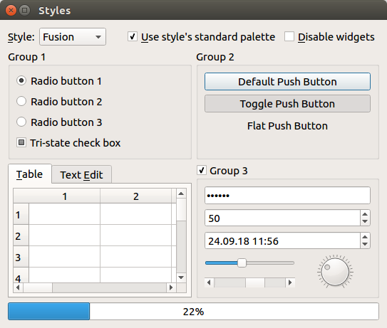

BA-INF 051 - Projektgruppe Intelligente Sehsysteme
PD Dr. Volker Steinhage
Dienstags, 14-16 Uhr
Vorbesprechung: Montag, 21. März. 2022, 15.00 Uhr via https://bbb.informatik.uni-bonn.de/b/vol-ung-npn
Themen:
|
|
Iterative Rekalibrierung von Stereokameras So wie wir Menschen zwei Augen zur Tiefenwahrnehmung nutzen, so können auch zwei Kameras zu einer Stereokamera zusammengefügt und hierfür genutzt werden. Dabei ist die Genauigkeit von Stereokameras stark davon abhängig, wie genau die Orientierung der Kameras untereinander bekannt ist. Diese relative Orientierung wird meist mittels manueller und zeitaufwändiger Kalibrierungsmethoden sichergestellt. Allerdings kann sich die Ausgangsorientierung der Kameras mit der Zeit leicht verändern, und damit eine erneute Kalibrierung erforderlich machen. Das Ziel ist es daher, ein vollautomatisiertes Verfahren zur iterativen und kontinuierlichen Rekalibrierung von Stereokameras zu entwickeln. Es soll auf bestehenden Python-Code aufgebaut werden, daher sind gute Python-Kenntnisse erforderlich. Zur Bestimmung von Punktkorrespondenzen zur Kalibrierung soll ein Transformer-Modell (Jiang et al. 2021) eingesetzt werden. Bildquelle: Jiang et al. 2021
|
|
|
Kolorierung von Nah-Infrarotbildern Wild- und Überwachungskameras verwenden häufig unsichtbare Infrarotbeleuchtung und monochrome Bildsensoren um bei Nacht zumindest Grauwertbilder aufnehmen zu können. Für viele anschließende Aufgaben wie Objekterkennung sind Farbbilder allerdings besser geeignet. Daher gibt es bereits diverse, oft auf Deep Learning basierende Ansätze, um solche Aufnahmen zu kolorieren (Limmer and Lensch 2016, Dong et al. 2018, Mehri and Sappa 2019). Diese Ansätze sollen vergleichend Evaluiert und auf die Kolorierung von Wildtieraufnahmen angepasst werden. Hierfür sind gute Python-Kenntnisse erforderlich und Erfahrungen mit PyTorch vorteilhaft. Bildquelle: Mehri and Sappa 2019
|

|
Improved Instance Segmentation in Videos Bei der herkömmlichen Instanz Segmentierung, wird auf dem eingegebenen Bild, die Objektklasse sowie eine pro-pixel Objekt-Maskierung bestimmt. Während dies eine allgemeine Lösung für herkömmliche Daten ist, kann die performanz auf schweren Bildern abfallen. Eine Lösung ist dabei, falls vorhanden, die Kontektinformationen eines ganzen Videoclips zu verwenden um mehr Informationen außerhalb des aktuellen Bilds einzubringen. In diesem Projekt geht es darum zunächst eine kurze Einarbeitung in die Netzwerkarchitektur vorzunehmen. Darauf gefolgt, soll dann auf einem Infrarot Videostream von Kamerafallen gearbeitet werden. Ziel des Projekts ist es erfolgreich auf dem Datensatz und mit dem Neuronal Netz zu arbeiten. Dabei soll eine vergleichende Evaluation mit aktuell vorliegenden Ergebnissen gemacht werden. Bildquelle: VisTR |
| Verbesserung des RITM Annotation Tools Im folgenden Thema geht es darum, ein existierendes Instanz-Masken Annotations Tool zu weiter zu entwickeln [1]. Hierbei soll ein Smart Propagation Module entwickelt werden, dass mittels Optical Flows den Arbeitsaufwand von Video-Annotationen reduzieren soll [2]. Ziel der Projektgruppe wird zunächst die Umsetzung und Implementierung des gennanten Modules sein. Darauf folgen sollen verschiedene qualitative analysen in hinsicht auf Präzision sowie untersuchung verschiedener Optical Flow Architekturen.
|
| Instance Segmentation (2 Themen / 2 Projektgruppenteilnehmende)
Ziel dieser Projektgruppe ist die Implementierung eines Tracking-Algorithmus, der auf Künstlichen Neuronalen Netzen basiert. Dabei wird mit Trainingsdaten aus einem aktuellen Forschungsprojekt gearbeitet. Die Implementierung wird mit Python und PyTorch durchgeführt. Neben der Implementierung des Tracking-Algorithmus wird es eine Einarbeitungsphase in die Annotation von Datensätzen sowie die Instance Segmentation geben. Zentrale Aufgabe wird die Analyse der Funktionsweise des Tracking-Algorithmus auf den neuen Daten sein und im Folgenden die Erweiterung des vorgegebenen Tracking Ansatzes für die Verwendung von Instance Masks.
|
| Verarbeitung von Satellitenbildern zur Ertragsprognose Frühe und genaue Ertragsprognosen sind wichtig für die Landwirtschaft. Es ist aber schwierig, Daten zu erfassen, die zur Ertragsprognose geeignet sind. Eine Lösung ist gegeben durch den Einsatz von Satellitenbildern, die Oberflächenreflexionen und klimatische Faktoren über einen langen Zeitraum zuverlässig erfassen. Unsere Gruppe konnte bereits vielversprechende Resultate durch Einsatz von Extreme Gradient Boosting (XGB) auf Satellitendaten zur Ertragsprognose von Sojabohnen erzielen. Andere Ansätze haben gezeigt, dass der Einsatz von den Boden beschreibenden Merkmalen die Genauigkeit eines Models noch erhöhen kann. Ziel der Projektgruppe ist die Integration der SoilGrids Bodendaten (https://soilgrids.org/) in eine bestehende Python Pipeline zur Ertragsprognose. Es ist auszuwerten, welchen Einfluss die Bodendaten nehmen und ob man die Menge an Merkmalen reduzieren kann. Am Ende ist es möglich, eine vergleichende Auswertung gegenüber in der Literatur vorgestellten Deep Learning Ansätze zu implementieren (z.B. Wang et al. 2020). |
|  | Entwicklung einer anwenderfreundlichen GUI für Ertragsprognose Erträge im Weinbau schwanken jährlich. Für die Weingenossenschaften und den Winzer ist es wichtig, frühzeitig Erträge schätzen zu können. Dadurch können zum einen Logistik geplant und zum anderen Preise geschätzt werden. Aufbauend auf bestehendem Python Code zur Ertragsprognose soll eine anwenderfreundliche GUI nach dem klassischen Model-View-Controller Modell (https://en.wikipedia.org/wiki/Model-view-controller) implementiert werden. Zuvor müssen Use Cases formuliert werden. Das Ertragsprognosemodel basiert auf XGBoost ((https://xgboost.readthedocs.io/en/stable/) und somit können mittels Shapley Values die Prognosen erklärt werden. Der Anwender soll nützliche Diagramme über die GUI anzeigen können. Gute Python Kenntnisse sind notwendig. Kenntnisse der GUI Entwicklung sind hilfreich, alles Notwendige kann aber während der Projektgruppe erlernt werden. |
Termine:
- Prioliste per Email mit Betreff "Prios PG" bis Do, 24.03.2022, 22 Uhr
- Zuordnungsmitteilung bis Mo, 28.03.2022, 18 Uhr
- 2-seitig. Expose (Ziel,Daten und Methoden,Zeitplanung) bis Mo, 04.04.2022, 14 Uhr
- Start der wöchentl. PG-Jour Fixe: Mo, 11.04.2022, 14.00 s.t. per BBB mit Präsentationen der ersten Zwischenergebnisse
| Home | News | Teaching | Projects | Publications | Team |